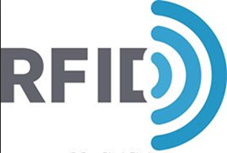
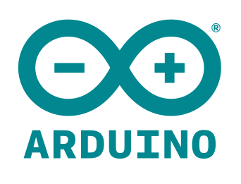

Anh-Tuan NGUYEN
Head of Technical Department in VOD Service
Research Assistant at Laboratoire d'Informatique de Paris 6
M.Sc. student in Networking at Sorbonné Universite (ex-UPMC - University Pierre and Marie CURIE - Paris 6)
RESEARCH
CURRENT RESEARCH
-
Research Assistant @ Laboratoire d'Informatique de Paris 6 (Sorbonne Université & CNRS)
Subject: Measurements and analysis of content distribution networks (CDN)
- Team : NPA
- Localisation : Campus Pierre et Marie Curie
- Sorbonne Université - LIP6
- Couloir 26-00, Étage 1, Bureau 120
- 4 place Jussieu
- 75252 PARIS CEDEX 05
- FRANCE
- Email: anh-tuan (dot) nguyen (at) lip6.fr
MAIN INTERESTS
- Internet of Things (IoT)
- Smart agriculture
- Smart house
- Smart wearable
- Artificial Intelligence (AI)
- Auto driving car
- Warehouse robot
- Virtual Assistant
- Virtual Reality, Augmented Reality
- Robotics
EXPERIENCES
-
Robocon National Contest,
Sponsored by Renesas & Intel.
2006
As a software team member, I distributed my research in infrared sensor, light sensor, ultrasound sensor and automated moving car. I released code for robot arm also.
Work closely with mechanical team, I understand how it work and always improve our solution for it.
Some of parts we had been researched:
- Sensor.
- Robot arm.
- Wireless transmition (Bluetooth, NRF24L01 2.4GHz and RF 433MHz).
- Step motor driver.
- Line reader & Encoder.

-
Self-Experimentation and Self-Research,
I joined a HCM University of Technical alumni group. We have many mini-projects here in: 3D carving & printing, automated and controlled robot with arm.
We tried to build many prototype of smart home device. One of them is automated watering system for indoor tree. It can collect information from environment (by sensor), calculate and decide when need to activate the pump.
I have some my own products at home: automatically (or remote control by smartphone) watering the tree in my balcony, auto fish feeding...
Some of parts we had been researched:
- Sensor (temperature, humidity, rain, pressure...).
- Interactive sendor (distance, barrier, radar...).
- Touch button and touch screen.
- RFID and NFC.
- Rasberry Pi and application.
- Arduino.
- ESP8266 SoC progamming.
- Wifi Relay.


 English
English